Scene 1Warm-Up
▶ Start hereHow your Wonder Films lessons work1-minute videoOpen ▾
🎯 TodayI can…
- explain what happens to water when it is heated or cooled.
- name the three states of matter and describe how they change.
- give examples of melting, freezing, and evaporation from everyday life.

🔎 Mystery specimenWhat is this tiny star?
What to do: Press Inspect specimen. Move the magnifying lens over the star, then tap 3 things you notice.
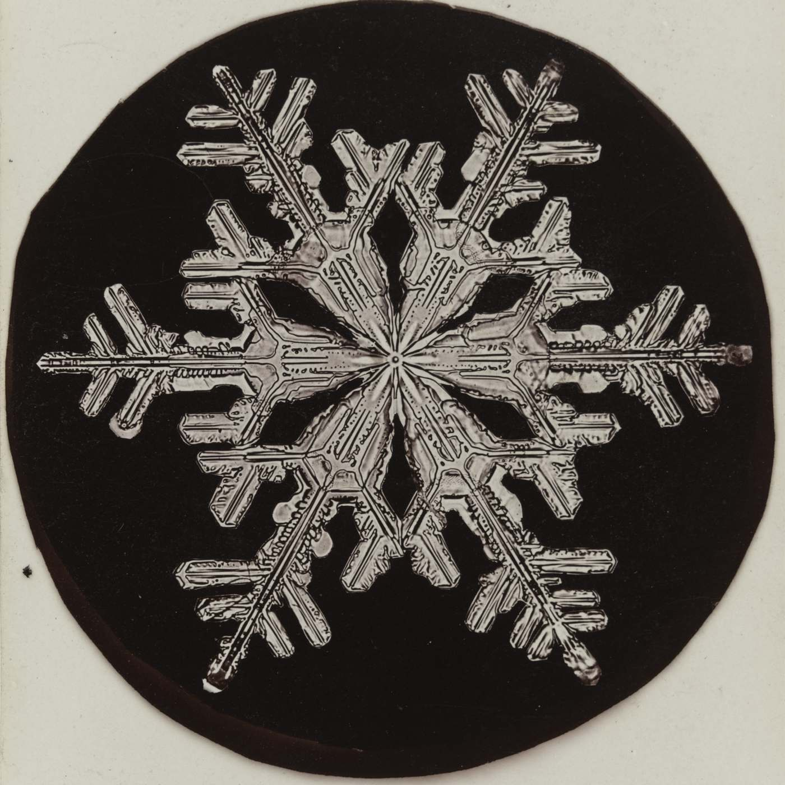
📚 Word WallWords scientists use
What to do: Tap or click each card to flip it and read what the word means.
Scene 2The Lesson
🌱 Part 1Three States of Matter
All matter is a solid, a liquid, or a gas. A rock is a solid. Juice is a liquid. The air around you is a gas.
Water is special. You can find it in all three states. Ice is solid water. Water vapor is water as a gas, and you can't see it.
🎞️ Put the scenes in orderWhat happens to an ice cube on a warm day?
What to do: Drag each photo into the film strip, from first to last. You can also tap a photo, then tap a frame. Get the order right and your strip becomes a movie.
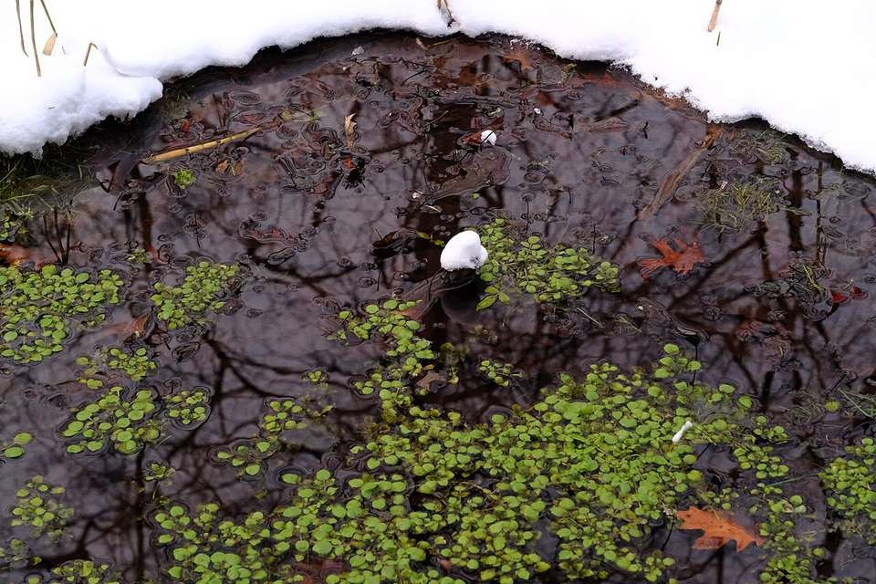
A puddle dries up on a sunny afternoon. Mia says, "The water is gone forever." What do you think?
🌤 Part 2Heating Changes Matter
When you add heat, matter can change state. If ice gets warm enough, it melts into liquid water.
Liquid water can also evaporate. It turns into water vapor and mixes into the air. Warmth makes evaporation faster, so puddles dry quickly on hot days. Water doesn't have to boil to evaporate.
🧪 The Hot-Cold TestAdd heat, or take heat away?
What to do: Follow the steps one at a time. You will pick, test, and then explain.
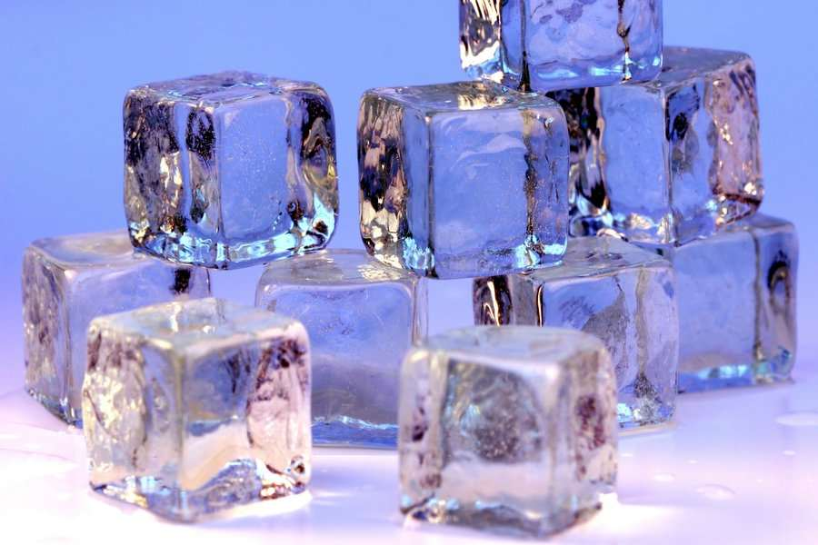
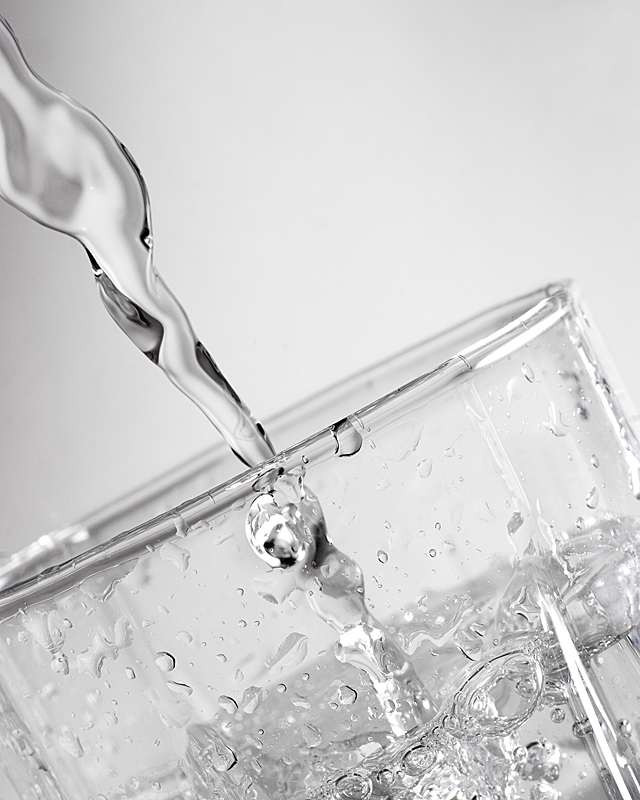
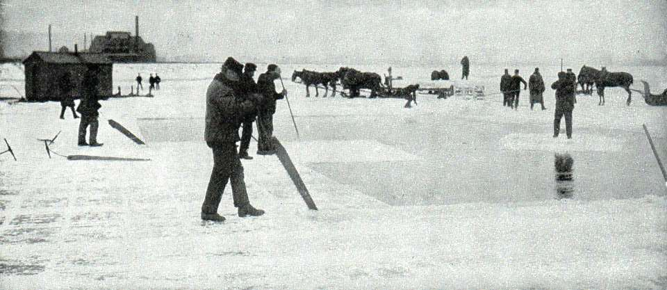
🌍 Part 3Cooling Changes It Back
The Sun's light heats land, water, and air. At night or in the shade, the Sun's heat is missing, so things lose heat and cool down.
Cooling works the opposite way from heating. When water vapor cools, it turns back into tiny drops of liquid. That is condensation. When liquid water gets cold enough, it freezes into ice.
🌤️ The Sky LadderFrom a snowy mountaintop down to the warm Gulf
What to do: First, make a prediction. Then brush the glowing step: drag across it (or tap it again and again) until the photo shows.
Where do you predict water stays frozen solid: high on a mountain, or down at the Gulf?
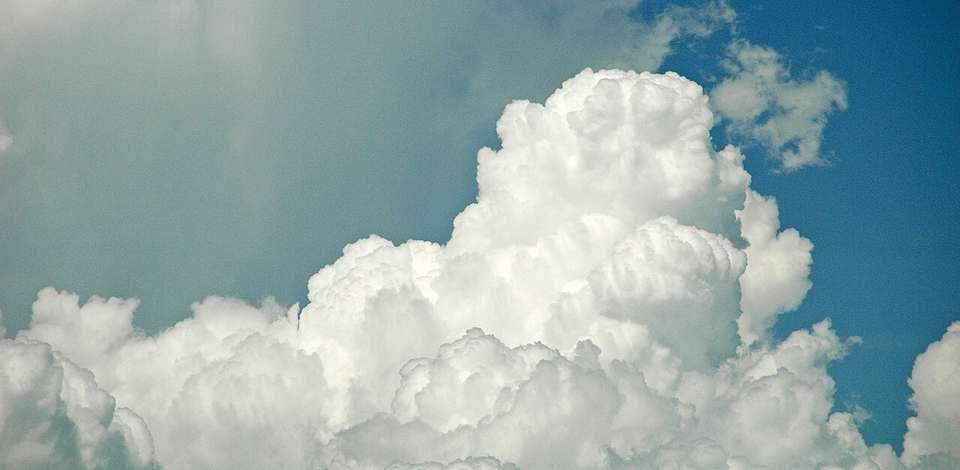
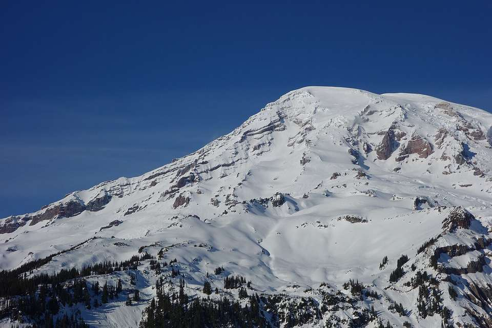
Step 1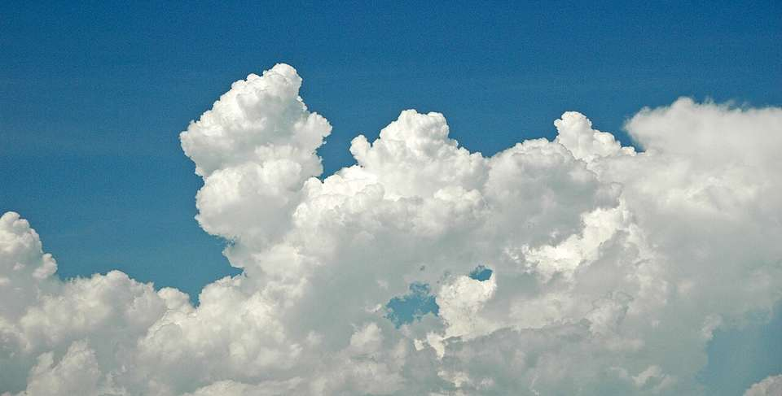
Step 2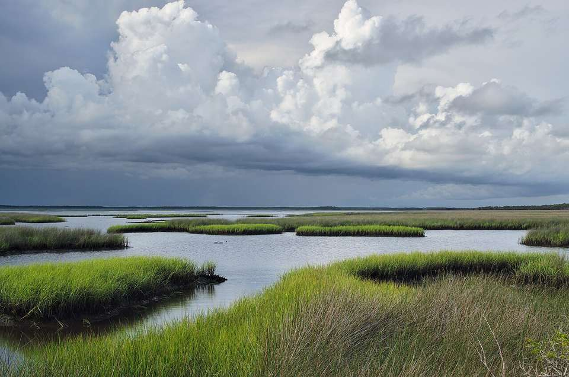
Step 3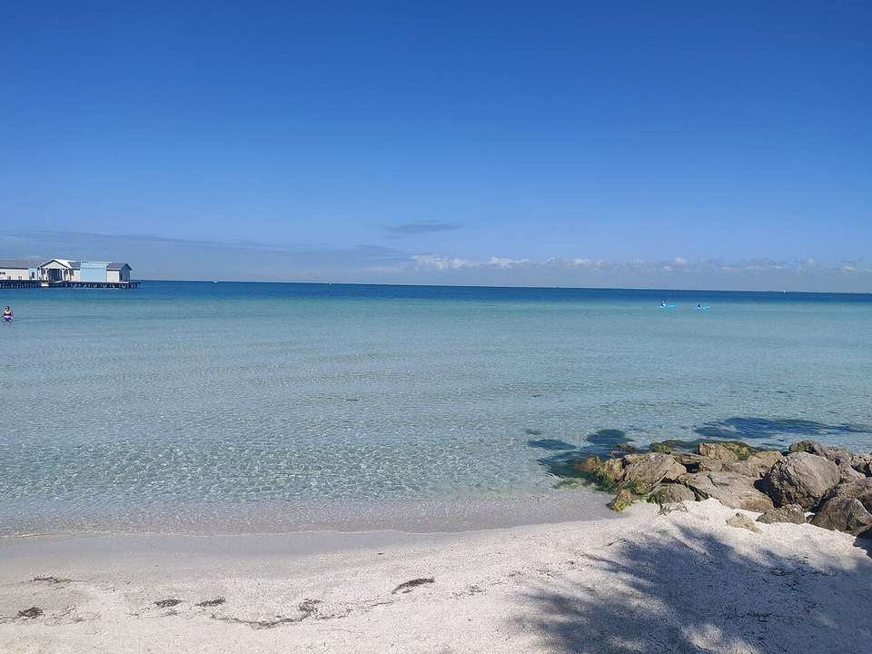
Step 4Heating and cooling change the state of water. The Sun's heat makes water evaporate. Cooling turns water vapor back into drops, and freezing cold turns water into ice.
Kai says, "Water can't evaporate unless it boils. The Gulf never boils, so it can't evaporate." Is Kai right?
The Snowflake Man
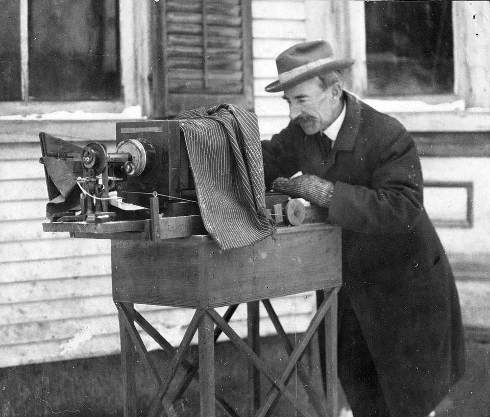
In 1885, a Vermont farmer named Wilson Bentley became the first person to photograph a single snowflake. He hooked a microscope to his camera and worked out in the cold, so the flakes would not melt.
He photographed more than 5,000 snowflakes. The mystery specimen at the start of this lesson is one of his photos!
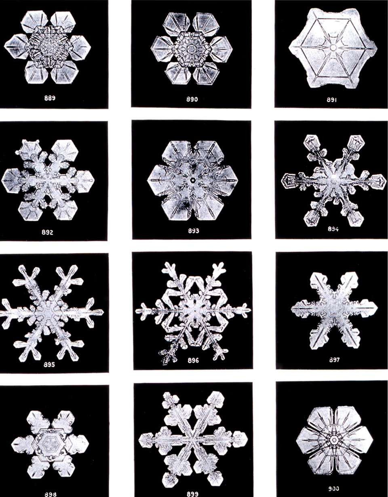
🕵️ Part 4State Change Files
What to do: Pick 3 files, one at a time. Tap a clue, then name the change. Predict if heat was added or taken away, and watch the place appear.
| File | My observation | Change | Heat | My evidence |
|---|
🌍 Rebuild the sceneUse your evidence to rebuild the scene OPTIONALOpen ▾
What to do: Pick one you solved. Pick the place it points to, then pick the living things that belong there.
Pick one from your chart and explain it.
Start with: "File __ shows…"
Scene 3Self-Check
What happens to ice when it is heated?
What is evaporation?
A student leaves a glass of water in the freezer overnight. In the morning, the water is ice. What change happened?
Scene 4Assignment
🔍 Part ALabel the state changes
What to do: Read each one. Pick the best answer, or type your answer.
1. Solid → Liquid: what is this change called?
2. Liquid → Gas: what is this change called?
3. Gas → Liquid: what is this change called?
🚀 Part BShort answer
What to do: Answer in complete sentences. Use your science words.
1. What causes matter to change from one state to another? Use the word "temperature" or "heat" in your answer.
2. How is evaporation different from melting? They both involve heating, so what is different?
✍️ Write and explainHow does heating and cooling cause water to change from one state to another?
What to do: Pick one from your evidence chart. Answer the three questions. Use at least one of the science words under the boxes.
Start with: "I think heating and cooling change water because…"
Start with: "I know this because I learned that when heat is added…"
Start with: "This makes sense because the Sun heats water and…"
🎨 Part CDraw and label
What to do: Draw the full state-change cycle for water. Show solid, liquid, and gas with arrows between them. Label each arrow: melting, freezing, evaporation, or condensation. Use color to show hot and cold.
🎬 Your question from Scene 1Can you answer it now?
What do you still wonder about? Write your question here. Then answer it.
📋 My answersEverything you wrote, in one place
(Your answers show up here as you write.)
How to turn in: Copy your answers and paste them into the Canvas assignment. Or download the file and upload it. Then press Save my drawing in Part C and upload your drawing too.
✅ Checklist
What to do: Tap each item when it is done. Items you finish on the page check themselves.
- My evidence chart has 3 state change files and my explanation.
- Part A: all three state changes labeled.
- Part B: questions 1 and 2.
- Part C: my drawing and both labels.
- Write and explain, with at least one science word.
🎬 Premiere my state-change storyYour exhibit
What to do: Check your exhibit. Pick the one you wrote about, add your first name, then press Premiere film.
I observed…
The change I'll watch for at home is…
My evidence…
It tells us…
🎞️ This film's frames
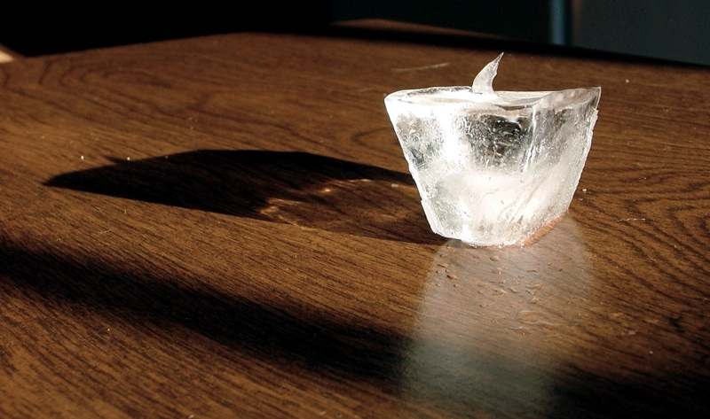
The ice cube's day
The Hot-Cold Test
The Sky Ladder
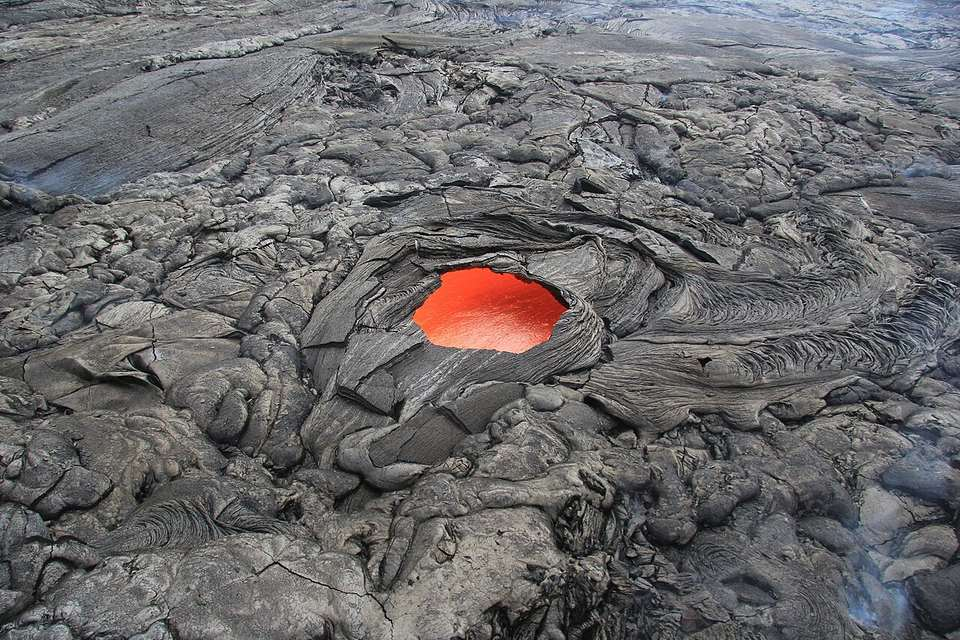
State change files
Earn all four frames in the Lesson, then finish the checklist.
🔜 Coming up nextComing up next: 27.02
Investigation: Heating, Cooling, and Water Changes. Next time, watch water heat up and cool down, and record what you observe.
Photo and music credits
- NSRW Ice Harvesting - sawing, Brown Bros., Public domain
- Apple trees covered with ice, Haneburger, Public domain
- Florida orange grove, Mmacbeth, CC0
- Molten Lava in Pahoehoe Skylight, USGS, Public domain
- ‘Ae Fern, National Park Service, Public domain
- Grinnell Glacier (28994416807), GlacierNPS, Public domain
- Grinnell Glacier and Lake from the summit of Mount Gould in 2023 (54208559317), GlacierNPS, Public domain
- Cracked dry mud (24663229471), USDAgov, Public domain
- A tree island in a sawgrass prairie in the Everglades, Moni3, Public domain
- Spider web Luc Viatour, Luc Viatour, CC BY-SA 3.0
- Gfp-grass-with-morning-dew, Yinan Chen, Public Domain
- Summit of Mt Rainier with cloudcap. (2207103465984fa0b4abcff0954e0d00), Steve Redman (MORA), Public domain
- Cumulus clouds (near Pine Island Sound, Florida, USA) 6 (26070157042), James St. John, CC BY 2.0
- Wide view of salt marsh St. Marks NWR 2017 11-15, James Leon Young, CC BY-SA 4.0
- Sunset in Sanibel, cc7824, CC BY-SA 3.0
- Dji fly 20250122 124616 320 1737567986403 photo optimized, Chastizement, CC0
- Lake Ella from parking lot, The Bushranger, CC BY-SA 4.0
- Lake Ella with snow, The Bushranger, CC BY-SA 4.0
- Sunset at Manasota Beach Club - April 2011, Skyfaller, CC BY-SA 4.0
- Snowmelt puddle, Gorillo.Chimpo, CC BY-SA 4.0
- Pensacola Beach - White Sands, Florida Coast (27268946483), Tony Webster from Minneapolis, Minnesota, United States, CC BY-SA 2.0
- 1-21-2025 Milton Florida Snow, Image No. 1, Jesselikeswx, CC BY 4.0
- Snowy Sunset in Milton, Florida, USA on January 21st 2025, Jesselikeswx, CC BY 4.0
- SnowflakesWilsonBentley, Wilson Bentley, Public domain
- Spectacular views of Mount Rainier from various points along the Nisqually Vi…, NPS Photo, Public domain
- Cumulus clouds (near Pine Island Sound, Florida, USA) 1 (25889771970), James St. John, CC BY 2.0
- Attractive view of marsh grass and clouds St. Marks NWR 2016-07-03, James Leon Young, CC BY-SA 4.0
- Clear blue water , Kurtkaiser, CC0
- Bottles of water and a tray of ice cubes inside a fridge freezer, Philsacor, CC0
- Melting - Flickr - Trinity, Rebecca Partington from Seattle, Washington, USA, CC BY-SA 2.0
- Puddle (34510204864), Dmitriy Protsenko from Dubna, Russia, Public domain
- Dry puddle at Swains Valley - geograph.org.uk - 6776264, Gerald England, CC BY-SA 2.0
- Cumulus clouds (near Pine Island Sound, Florida, USA) 3 (25889762490), James St. John, CC BY 2.0
- Wilson A. Bentley, Snowflake, c. 1905, Gelatin silver printing-out-paper prin…, Wilson A. Bentley (Museum of Modern Art), Public domain
- Ice cubes openphoto, Darren Hester, CC BY-SA 2.5
- Glass of Water - Flickr - Greg Riegler Photography, Greg Riegler from Pensacola, FL, USA, CC BY 2.0
- Wilson "Snowflake" Bentley, Unknown photographer, Public domain
- Music: "Winter" (RV 297) I. Allegro non molto (Antonio Vivaldi), played by the Modena Chamber Orchestra, public domain (Musopen, via Wikimedia Commons).
- Opti the owl: Optima Academy. Sound effects are made by the page. The ice cube movie, the Hot-Cold Test, and the Sky Ladder are models; every place photo is real.